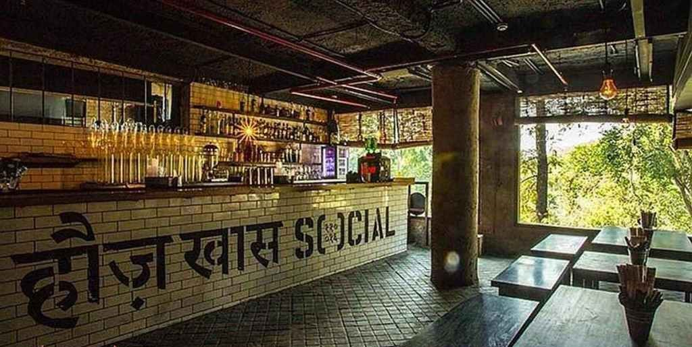
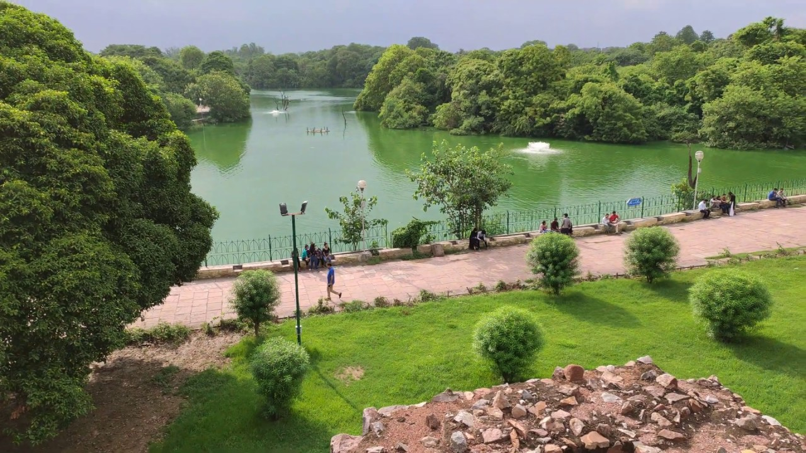
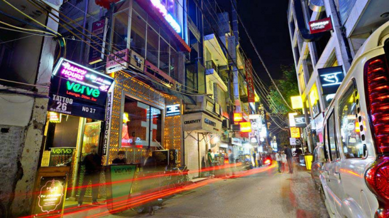

Delhi is a city full of hidden gems and unique experiences. We invite you to discover the best places to visit in Delhi with our expert recommendations.
Hauz Khas is easily accessible by metro or bus, with the Hauz Khas metro station located just a short walk away. Admission to the area is free, but some attractions within the Hauz Khas Complex may require a small fee. The area is open from sunrise to sunset, making it a great spot for both day and evening visits. Nearby attractions include the Deer Park and the Qutub Minar, and visitors can also enjoy a variety of restaurants, cafes, and boutiques in the Hauz Khas Village area. It is recommended to wear comfortable shoes and clothing suitable for the weather, as there is some walking involved in exploring the area. Photography is allowed in most areas, but visitors should be respectful of any signage or restrictions in place, especially in religious or cultural sites. Special events and activities are occasionally held in Hauz Khas, such as live music performances and art exhibitions.
DELHI TOURIST SPOT INFO
- SPOT NAME : HAUZ KHAS
- Language : Hindi,English
- Visiting Time : Monday to Saturday, 10:30 AM to 7:00 PM (Closed on Sundays)
- Address : Hauz Khas Village, Deer Park, Hauz Khas, New Delhi, Delhi 110016
- Size : Hauz Khas is a historic complex spread over about 1280 acres, including the Hauz Khas Fort, Hauz Khas Lake, Deer Park and other historical buildings.
DESCRIPTION
Hauz Khas is a popular urban village in South Delhi with a rich history dating back to the 13th century.Notable attractions include the Hauz Khas Complex, Hauz Khas Lake, and Hauz Khas Village, a trendy neighborhood filled with cafes, restaurants, and boutiques. Hauz Khas is known for its unique blend of ancient ruins, modern buildings, vibrant nightlife, and cultural events.
Visuals
   Some Useful LinksDownloadable maps
Must-read articles
Deals and discounts